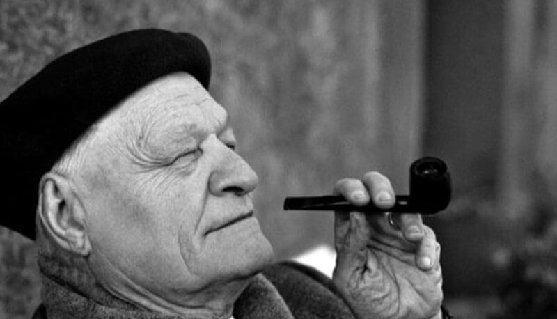

Filologia d'autore
Filologia d'autore

"La poesia è poesia
Giuseppe Ungaretti è stato uno dei più importanti poeti del Novecento. Egli ci ha lasciato una copiosa eredità di testi a cui lavora per tutta la vita. Egli stesso, infatti, modifica le sue poesie nel tempo generqando così le cosiddette varianti d'autore.
Con il termine variante d'autore si indicano, quindi, tutte le modifiche o le rielaborazioni, accolte nel testo, fatte dallo scrittore stesso.
In questo sito potrai approfondire la Vita, le Opere e i testi di Ungaretti, da un punto di vista filologico e letterario.
Potrai anche leggere le sue prime Opere confrontando la prima versione, l'edizione del 1916 (Il Porto Sepolto) e l'ultima, quella del 1931 (L'Allegria).